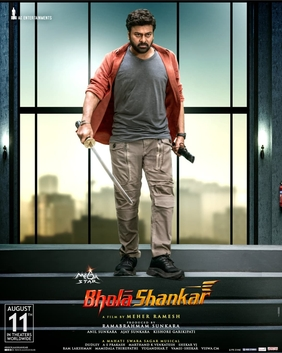

Bhola Shankar Review: Ultra Cringe Pro Max Vedhalam

Rating:1/2
No words are needed to describe this monstrosity I saw. I remember in a interview that Meher Ramesh called Vedhalam a "cringe film". If you call
it a cringe film, then why the hell would you remake it? If you call this cringe, then I can call this ULTRA PRO MAX CRINGE. By far the worst acting
by Chiranjeevi man, it was a pain to watch. And also Keerthy Suresh as the sister role? Hadn't she not learned her lesson in Annaatthe? I'm gona bet
Siruthai Siva is laughing in the corner just watching this mess. Also the overall film's message is about women empowerment but did I see just see seducing
scenes in the flashback portions? Absolutely horrible. And then music, BRUH, the only saving grace in Vedhalam was Anirudh's music in which he gave instant
chartubsters, but the music here is SHIT. As someone who admired Chiranjeevi, I really don't why he would accept this film. Chiru please don't do any more
remakes, they are the distractions to your film career. Overall, please don't watch this. Even if you are a Chiru fan.